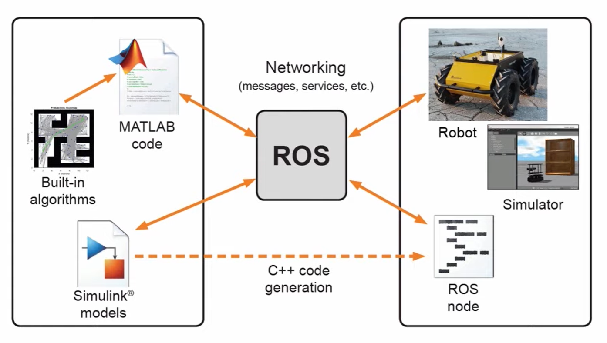

MATLAB Robotics Toolbox

- 官方网站：https://uk.mathworks.com/products/robotics.html
- Peter Corke Robotics Toolbox：https://petercorke.com/toolboxes/robotics-toolbox/
- 许可：MATLAB (商业许可) / Peter Corke 版本 (MIT 开源)
引言
MATLAB机器人工具箱是机器人学教育和研究中广泛使用的软件工具。实际上存在两个不同但相关的工具箱：一是MathWorks官方发布的Robotics System Toolbox，从MATLAB 2013版本开始引入；二是由Peter Corke教授开发的开源Robotics Toolbox for MATLAB (RTB)。两者都为机器人建模、仿真和控制提供了丰富的函数库。
Peter Corke 的 Robotics Toolbox
Peter Corke教授 (Queensland University of Technology, 昆士兰科技大学) 开发的Robotics Toolbox (RTB) 是机器人学教育领域的经典工具，其历史可追溯至1990年代。该工具箱与其著名教材《Robotics, Vision and Control》配套使用，被全球数百所大学的机器人学课程采用。
RTB的核心功能包括：
- 齐次变换 (Homogeneous Transformation) 与旋转表示
- DH参数 (Denavit-Hartenberg Parameters) 建模
- 正运动学 (Forward Kinematics) 与逆运动学 (Inverse Kinematics)
- 雅可比矩阵 (Jacobian Matrix) 计算
- 轨迹规划 (Trajectory Planning)
- 动力学建模 (Dynamics Modeling)
Peter Corke还发布了Python版本的工具箱 Robotics Toolbox for Python（roboticstoolbox-python），使得非MATLAB用户也能使用相同的功能。
MathWorks Robotics System Toolbox
MathWorks官方的Robotics System Toolbox提供了更工程化的功能集：
- 机器人建模：支持通过URDF导入机器人模型，自动构建刚体树 (Rigid Body Tree) 结构
- 运动规划 (Motion Planning)：集成了RRT、PRM等路径规划算法，以及基于优化的轨迹规划方法
- 定位与建图 (Localization and Mapping)：提供SLAM算法、粒子滤波 (Particle Filter) 等功能
- 感知处理：支持点云 (Point Cloud) 处理、障碍物检测等
- ROS集成：提供ROS和ROS 2接口，使得MATLAB代码和Simulink可以与ROS系统通信
DH 参数建模
DH参数 (Denavit-Hartenberg Parameters) 是描述串联机械臂运动学结构的标准方法。每个关节由四个参数定义：连杆长度 (a)、连杆扭角 (alpha)、连杆偏距 (d) 和关节角 (theta)。使用Peter Corke的RTB建模示例：
% 定义PUMA 560机械臂的DH参数
L(1) = Link('d', 0, 'a', 0, 'alpha', pi/2);
L(2) = Link('d', 0, 'a', 0.4318, 'alpha', 0);
L(3) = Link('d', 0.15, 'a', 0.0203, 'alpha', -pi/2);
L(4) = Link('d', 0.4318,'a', 0, 'alpha', pi/2);
L(5) = Link('d', 0, 'a', 0, 'alpha', -pi/2);
L(6) = Link('d', 0, 'a', 0, 'alpha', 0);
robot = SerialLink(L, 'name', 'PUMA 560');
robot.plot([0 0 0 0 0 0]); % 可视化零位姿态
轨迹规划 (Trajectory Planning)
工具箱提供了多种轨迹生成方法：
- 关节空间轨迹 (Joint-Space Trajectory)：使用
jtraj函数在关节空间中生成平滑的多项式轨迹 - 笛卡尔空间轨迹 (Cartesian-Space Trajectory)：使用
ctraj函数在操作空间中生成直线或弧线轨迹 - 梯形速度曲线 (Trapezoidal Velocity Profile)：使用
tpoly或lspb函数生成具有加速-匀速-减速阶段的轨迹
轨迹规划结合逆运动学求解，可以实现机械臂末端执行器 (End Effector) 沿指定路径运动。
可视化功能
MATLAB环境下的可视化是工具箱的一大优势：
- 机器人模型可视化：通过
plot函数显示机器人的三维模型和关节运动动画 - 工作空间分析 (Workspace Analysis)：可视化机械臂的可达工作空间
- 轨迹可视化：在三维空间中显示末端执行器的运动轨迹
- Simulink集成：通过Simulink模块实现机器人控制系统的图形化建模和仿真
与ROS的集成
Robotics System Toolbox提供了ROS的接口，使得MATLAB代码和Simulink可以和ROS很好的结合。具体功能包括：
- 从MATLAB连接到ROS Master，订阅和发布ROS话题
- 调用ROS服务和动作
- 在Simulink中使用ROS消息类型进行控制回路设计
- 支持将MATLAB/Simulink算法生成ROS节点并部署
这一集成使得研究人员可以在MATLAB中进行算法开发和验证，然后将成熟的算法部署到基于ROS的真实机器人系统中。
优势与局限
优势：
- MATLAB语言易学，矩阵运算能力强，适合算法原型开发
- 可视化和绘图功能丰富
- 与Simulink集成，支持控制系统设计和验证
- Peter Corke版本配套教材，教育价值高
局限：
- MathWorks版本需要购买商业许可，成本较高
- 不适合大规模三维场景仿真或实时物理仿真
- 执行效率不如C++编写的仿真器
参考资料
- MathWorks Robotics System Toolbox文档
- Peter Corke Robotics Toolbox for MATLAB
- Robotics Toolbox for Python
- Corke, P. (2017). Robotics, Vision and Control: Fundamental Algorithms in MATLAB (2nd ed.). Springer.